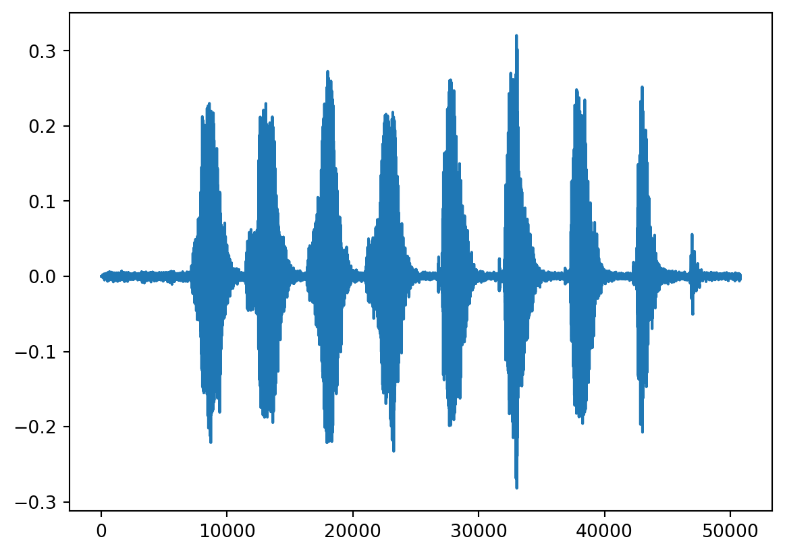

import torch
import torchaudio
import matplotlib.pyplot as pltCreating an audio DataLoader
Load packages
Download and unzip data
PyTorch comes with many classic datasets.
This is convenient to develop and test your model, or to compare its performance with existing models using these datasets.
Here, we will use the YESNO dataset which can be accessed through the torchaudio.datasets.YESNO class:
help(torchaudio.datasets.YESNO)Help on class YESNO in module torchaudio.datasets.yesno:
class YESNO(torch.utils.data.dataset.Dataset)
| YESNO(root: Union[str, pathlib.Path], url: str =
| 'http://www.openslr.org/resources/1/waves_yesno.tar.gz',
| folder_in_archive: str = 'waves_yesno',
| download: bool = False) -> None
|
| Args:
| root (str or Path): Path to the directory where the dataset is found
| or downloaded.
| url (str, optional): The URL to download the dataset from.
| (default: "http://www.openslr.org/resources/1/waves_yesno.tar.gz")
| folder_in_archive (str, optional):
| The top-level directory of the dataset. (default: "waves_yesno")
| download (bool, optional):
| Whether to download the dataset if it is not found at root path.
| (default: False).The root argument sets the location of the downloaded data.
Where to store this data in the cluster
We will all use the same data. It would make little sense to all download it in our home directory.
In the Alliance clusters, a good place to store data shared amongst members of a project is in the /project file system.
You usually belong to /project/def-<group>, where <group> is the name of your PI. You can access it from your home directory through the symbolic link ~/projects/def-<group>.
In our training cluster, we are all part of the group def-sponsor00, accessible through /project/def-sponsor00 (or the hyperlink ~/projects/def-sponsor00).
We will thus use ~/projects/def-sponsor00/data as the root argument for torchaudio.datasets.yesno):
yesno_data = torchaudio.datasets.YESNO(
'~/projects/def-sponsor00/data/',
download=True)Explore the data
A data point in YESNO is a tuple of waveform, sample_rate, and labels (the labels are 1 for “yes” and 0 for “no”).
Let’s have a look at the first data point:
yesno_data[0](tensor([[ 3.0518e-05, 6.1035e-05, 3.0518e-05, ..., -1.8616e-03,
-2.2583e-03, -1.3733e-03]]),
8000,
[0, 0, 0, 0, 1, 1, 1, 1])Or, more nicely:
waveform, sample_rate, labels = yesno_data[0]
print("Waveform: {}\nSample rate: {}\nLabels: {}".format(waveform, sample_rate, labels))Waveform: tensor([[ 3.0518e-05, 6.1035e-05, 3.0518e-05, ..., -1.8616e-03,
-2.2583e-03, -1.3733e-03]])
Sample rate: 8000
Labels: [0, 0, 0, 0, 1, 1, 1, 1]You can also plot the data. For this, we will use pyplot from matplotlib.
Let’s look at the waveform:
plt.figure()
plt.plot(waveform.t().numpy())
Split the data into a training set and a testing set
train_size = int(0.8 * len(yesno_data))
test_size = len(yesno_data) - train_size
train_dataset, test_dataset = torch.utils.data.random_split(yesno_data, [train_size, test_size])Create training and testing DataLoaders
DataLoaders are Python iterables created by the torch.utils.data.DataLoader class from a dataset and a sampler.
We already have a dataset (yesno_data). Now we need a sampler (or sampling strategy) to draw samples from it. The sampling strategy contains the batch size, whether the data get shuffled prior to sampling, the number of workers used if the data is loaded in parallel, etc.
To create a training DataLoader with shuffled data and batch size of 1 (the default), we run:
train_loader = torch.utils.data.DataLoader(train_dataset, shuffle=True)data_loader is an iterable of 0.8*60=48 elements (80% of the 60 samples in the YESNO dataset):
len(train_loader)48We do the same to create the testing DataLoader:
test_loader = torch.utils.data.DataLoader(test_dataset, shuffle=True)